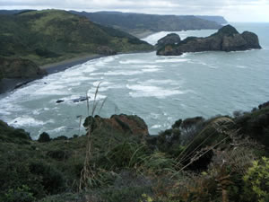
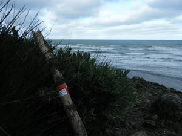
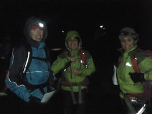
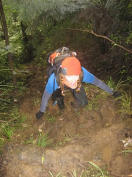

|
Organiser: Alastair McDowell 7pm, 19th February 2010: I set off in a team from Muriwai Beach one late summer evening, taking part in a very unofficial 12 hour Rogaine which would send us through the night searching for make-shift checkpoints hidden along streams, under viewing platforms, around coastal cliffs… I loved it. This exciting and adventurous idea lay as a seed, dormant in the fertile plains of my mind until [ironically] the winter of this year. Noticing that Auckland was lacking any long distance Rogaine events, I decided to take the initiative and launch my own. A challenge for runners, trampers and orienteers alike; the Bethells 12-Hour Rogaine was born. The event was advertised through tramping clubs, sports forums and word of mouth, with one team even traveling from Hamilton to take part. While the threatening weather forecast saw many last minute pull-outs, we had almost thirty keen participants lining up at the Surf Club gate rearing to go. This extraordinary challenge was set in the unique surroundings of Te Henga, Bethells Beach - a great location for the event; with access to the extensive Cascades track network, Te Henga trail, rugged beaches, sand dunes, and Lake Wainamu.  Thirty controls were spread out across the map, with several interesting route choices to consider. Tide times and darkness hours were also thrown into the churning strategy pot, leaving teams some serious thinking to do in the thirty minutes before midnightWalkers would become trampers, trampers would become navigators, and navigators would become endurance athletes, as they were thrown into the dark, and the ugly, for a full twelve hours of glorious adventure. As Charles Dickens famously said, “The men who learn endurance, are they who call the whole world, brother”. Held in the guts of winter, the wild West Coast lived up to its name. Teams who chose to start along the Te Henga Walkway, a dramatic 9 kilometre section of coastal track, were belted with sou’westerlies in the silhouette-shadow landscape of the early morning. Andrew Turnbull from team “The Camel & the Straw” said, “It was a really awesome event, the Te Henga trail in the wind and the rain was epic.” At each checkpoint, a short clue narrowed down the likely whereabouts of the treasure, in the form of red & white plastic tape. Each location had a unique two-letter code that teams would write down to prove their conquest.  Each code was an acronym describing something about the surroundings, e.g. a tape-wrapped rock hidden in a crevasse around the coast of Erangi point that was only accessible at low tide had the code ‘LT’. The further out they ventured from the base, the more points they could earn. If teams managed to trek out as far as Ongaruanuku Hut, they would be stoked to find some red & white tape hanging in the woodshed. One team decided to treat themselves to a power nap at the hut before the homeward journey, via a waterfall traverse at Pig Wallow, some tree climbing on Chateau-Mosquito, a stream bash down the Wainamu, and finishing with a rock climb and some cave exploring on Bethells Beach, before collapsing at the finish. Elated, and alive.Substantial calories were replaced at the finish with hearty servings of pumpkin soup, warmed to perfection with the trusty club primus. Matt Lillis, notable gourmet outdoor chef de cuisine found the generously frosted chocolate cake to be “succulent and moist”. Helen Liley and myself spent two days tramping through the Waitakeres setting up the course the week prior, finding interesting locations and writing clues on the go. We slept at O’nuku Hut and in a spectacular bivvy against the cliffs of Bethells Beach the following night. Luckily it wasn’t tested for waterproofness. The Bethells 12-Hour Rogaine was a huge success in its first running; all the teams seemed to arrive back at base looking shattered, but exhilarated by the experience of going hard all through the night, and walking into the new day.
  The overall winner was elite women’s adventure racing team, Team Macpac Girls on Top, who managed to cover a 53km loop (with an impressive 2187m vertical gain) around all three sections of bush, picking up all but two checkpoints! Following this success, we plan to organise more of these longer Rogaines in the future, and also hope that this will inspire others to organise similar events. We have our sights set on running a Hunua 12-Hour Rogaine for November 2011, and a Karekare 12-Hour Rogaine for February 2012. Planning will start soon, so watch this space for more details to come!
Final Results (Maximum score 1840)
Alastair McDowell | ||||||||||||||||||||||||||||||||||||||||||